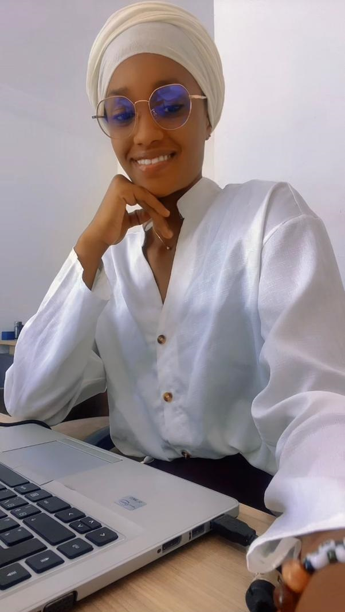

À propos

Je suis Oumou Diallo, étudiante en BTS SIO option SLAM, passionnée par l’univers du développement informatique et du web design.
Curieuse et motivée, j’aime concevoir des interfaces modernes et intuitives, tout en développant des solutions logicielles adaptées aux besoins des utilisateurs. Mon objectif est d'acquérir une expertise polyvalente pour allier créativité et performance technique.
Toujours en quête d’apprentissage, je reste à l’affût des nouvelles tendances technologiques pour enrichir mes compétences et relever de nouveaux défis.